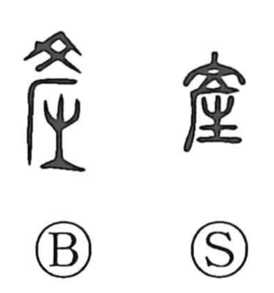

産

Kun: umu, umareru, ubu | On: san
to give birth ・ to be born ・ to produce ・ production
Explanation
産, formerly 產, combines 文, a body marking, with 厂, here the forehead, and 生, birth. It records a rite in which a mark was painted on a newborn’s brow. At this stage the marking could be made temporarily in red pigment or ink.
The rite admitted and protected the new life, preventing a harmful spirit from attaching itself to the child. A comparable Japanese practice placed a crossed mark on the infant’s forehead. Marking the body at later changes of status appears in related characters for adulthood and other rites of passage.
From the birth ceremony, 産 comes to mean giving birth or being born. It then broadens to producing, bringing forth, and increasing, and to the products or resources by which a livelihood is maintained.